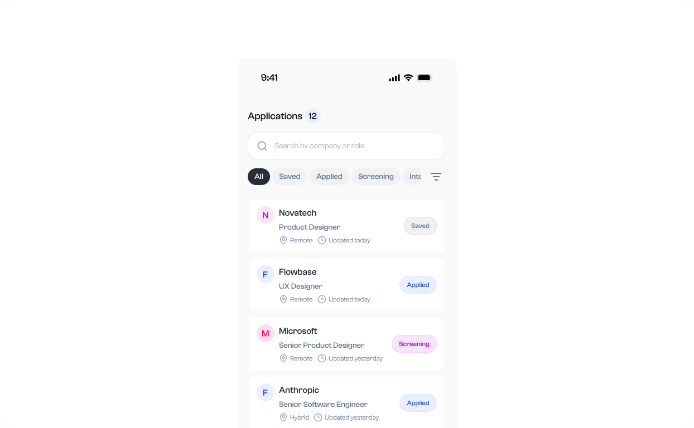
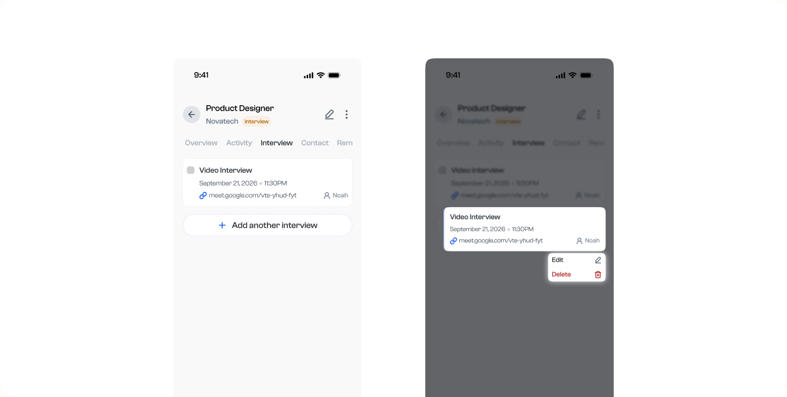
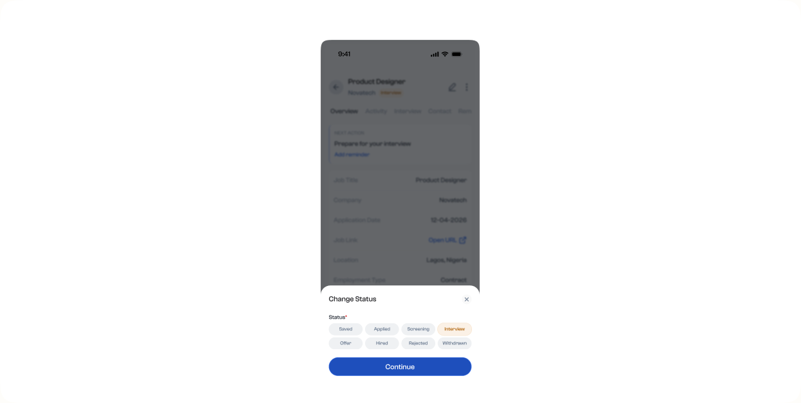

Applyflow: Track every opportunity from Saved to Offer, Hired, or Declined.
Designing the moments between interview, follow-up, and offer.
Product designer · End to end
HR Tech
8 weeks
One place to keep a multi-step job search moving.
Independent concept project
Job seekers managing multiple opportunities
Application stages, interviews, reminders, and offer details
Design question How might one clear application flow help people keep track of each opportunity and its next step?
Application tracking, from Saved to Offer, Hired, or Declined.
Applyflow is a personal product design project in the HR Tech and Career Management space. I designed an application tracking experience that follows each opportunity from Saved through application stages and interviews to a clear outcome: Offer, Hired, or Declined.
The Problem
When opportunities move through different stages, job seekers must juggle interview schedules, status updates, follow-ups, and offer details. Those tasks can become fragmented and easy to lose track of. I explored how to bring the key details and next actions into one connected application experience.

The Design Goal
My goal was to make job tracking straightforward without forcing people to complete everything at once. I designed for two needs: users should control when they update an application, while important details and unfinished actions remain easy to find.
The Solution
1. Managing Interview Details
People can review scheduled interviews and long-press a card to edit or delete its details. I placed these less frequent actions in a contextual menu: they stay available when needed without adding permanent controls to every card.

2. Updating Application Status
People can move an application from Saved through Applied, Screening, and Interview, then record the outcome as Offer, Hired, or Declined. The status sheet makes the current stage clear before a change. Choosing Offer leads directly to the offer details step, while Hired and Declined record the final outcome.

Make progress visible without making the flow feel heavy.
- Use one status model. Keep each opportunity in a recognizable stage, from Saved through the active process to its final outcome.
- Keep the next action close. Show relevant interview, reminder, and offer details in the application context so users can act without losing their place.
- Make infrequent actions contextual. Put edit and delete options behind a long-press menu to keep interview cards focused on the information people scan most.
One connected journey, from onboarding to outcome.
The flow starts by helping people set up their account, then brings saved opportunities into a trackable application list. From each application, users can review key details, manage interviews and reminders, update the current stage, and capture offer information when they reach that point.
A shared status model ties the screens together, so people can see what needs attention and move an application forward—from Saved through the hiring process to Offer, Hired, or Declined.
Project Screen Flow
Full flow overview · Select the image to zoom and inspect the screens.
Final thoughts
Designing Applyflow meant connecting the small decisions across a job search: how an application moves between stages, which details matter at each step, and when to surface an action. I focused on making that progression—from Saved through each active stage to Offer, Hired, or Declined—clear without adding unnecessary friction.
Validation is the next step: test the stage model and key flows with job seekers, then refine the experience based on where they need more clarity or control. No user testing or outcome metrics are claimed for this concept.
Explore more selected work